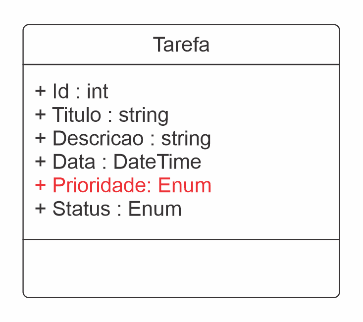
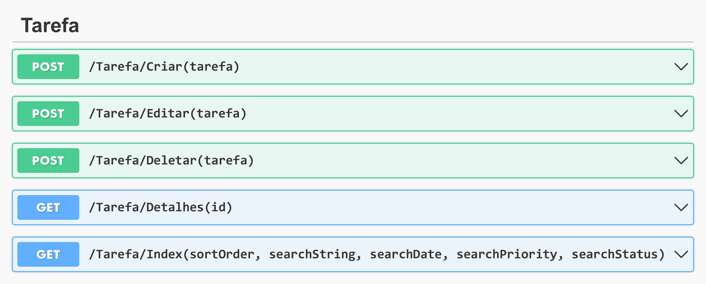

Sobre o desafio:
DIO - Trilha .NET - API e Entity Framework
Descrição do desafio:
Para esse desafio, foram utilizados os conhecimentos adquiridos no módulo API e Entity Framework, da trilha .NET da DIO (Digital Innovation One).
Contexto:
Construir um sistema gerenciador de tarefas, onde poderá ser agendado com atributos uma lista de tarefas para melhor organizar a rotina. Essa lista de tarefas precisa ter um CRUD (Create, Read, Update and Delete), ou seja, deverá permitir criar, editar e deletar registros. A aplicação implementada foi uma MVC (Model, View and Controller).
Classe principal da tarefa:
 Figura 01: Diagrama da classe tarefaFoi adicionado, com fins didáticos a propriedade Enum: Prioridade. A qual categoriza o nível de prioridade da tarefa nas seguintes classificações: mínima, média, máxima e urgente.
Métodos implementados:
 Figura 02: Listagem dos métodos principais da ControllerCriar, Editar, Deletar e Detalhes: Contemplam as funções básicas de um CRUD, trocando dados com requisições ao sqlserver através da migration.
- sortOrder: Consiste nos critérios de ordenação através do ViewBag classificados em: ordenar por Id, Título e Data.
- searchString, SearchDate, searchPriority, searchStatus: Lógica implementada para filtrar as tarefas por: palavras-chave (searchString), data (searchDate), prioridade (searchPriority) e status (searchStatus).
Index: Inseridas no método principal, as ações: